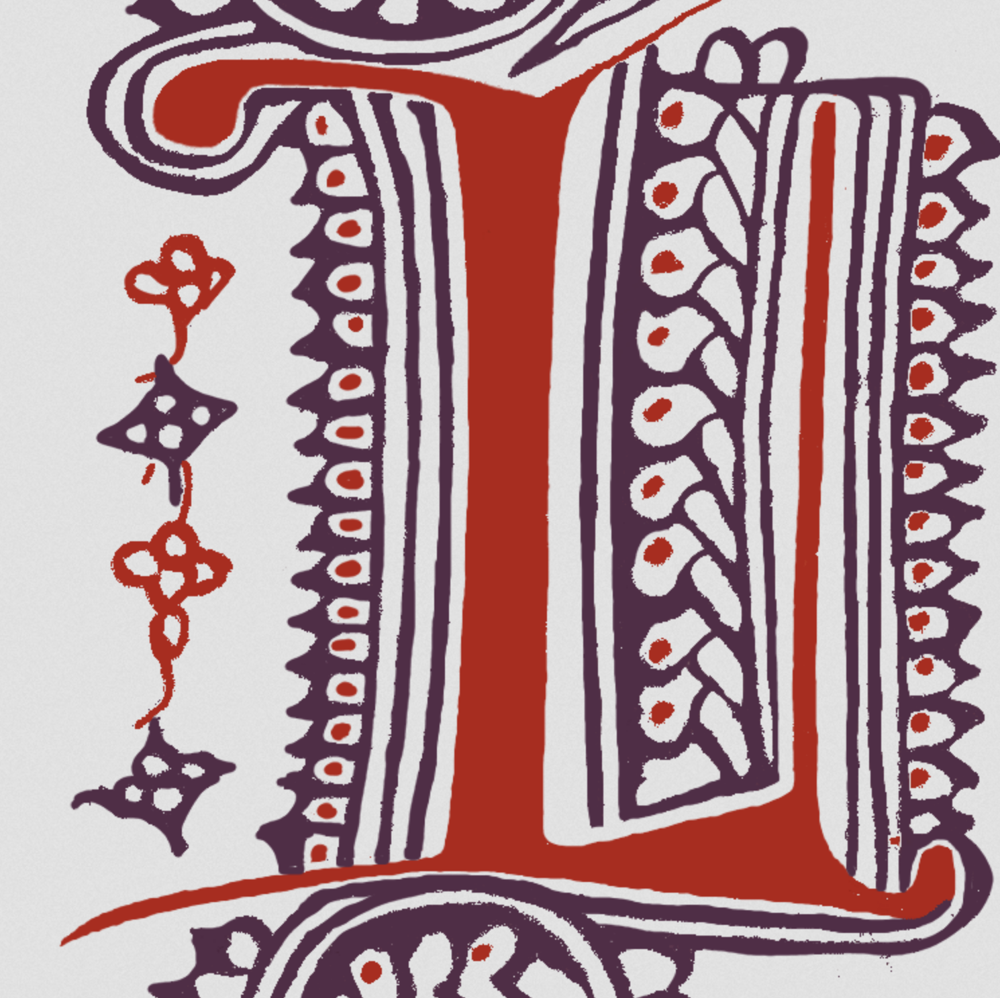
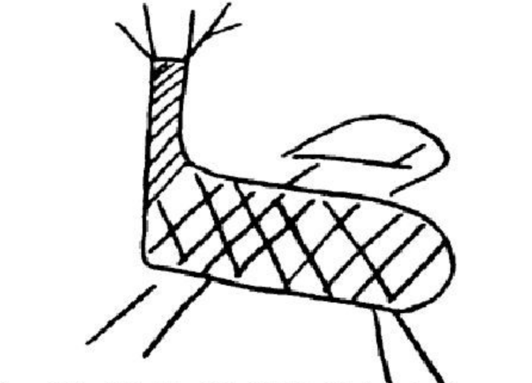
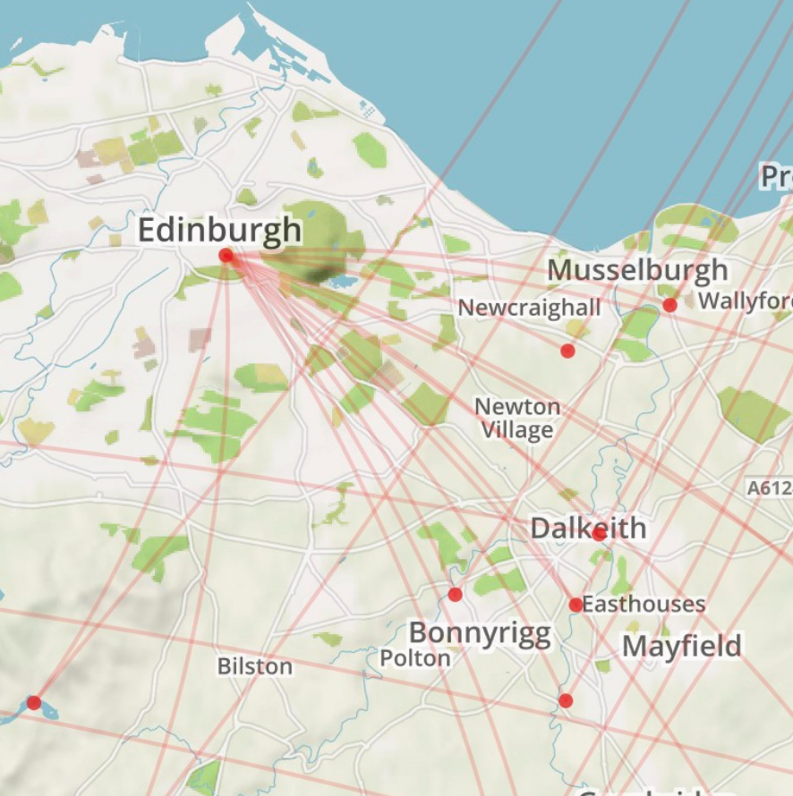

projects
» digital humanities
Digital Humanities @ Washington and Lee University
Mellon-funded Digital Humanities initiative that includes speaker series, incentive grants, summer research, and undergraduate fellowship.

Huon d’Auvergne Digital Edition
This NEH-funded digital edition project presents the unpublished Franco-Italian medieval epic Huon d’Auvergne.

Ancient Graffiti Project
A digital resource for locating and studying handwritten inscriptions of the early Roman empire.

Mapping the Scottish Reformation
A database of the Scottish clergy, 1560 to 1689
» personal

Self-Preservation Series
A workshops series dedicated to the questions: why preserve? why collect? why not preserve? why not collect? These workshops were carried out at the Read/Write Library during 2012-2013.